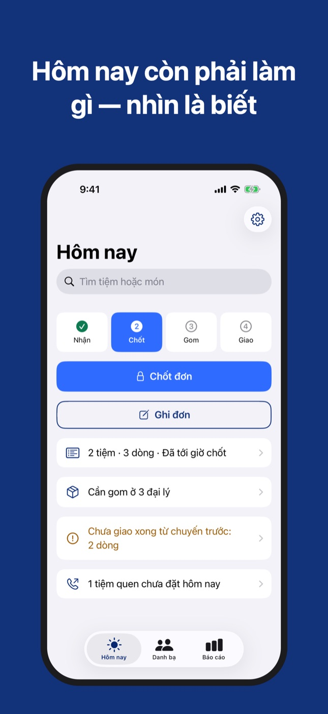
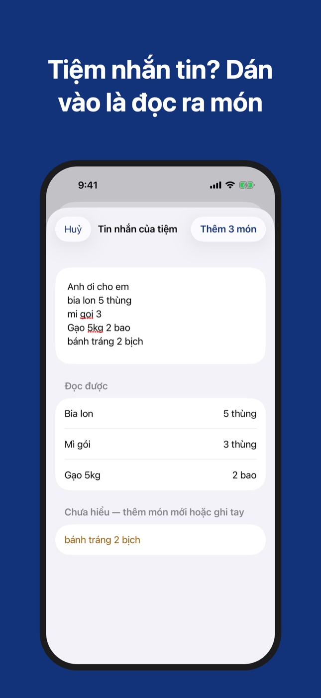
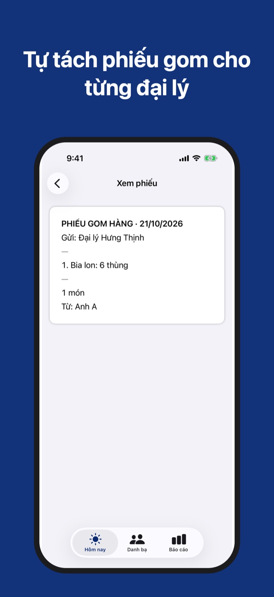

Sổ Tay Đặt Hàng
Ghi đơn tiệm, tách phiếu gom
Tiệm gọi tới là ghi ngay, 6 chạm xong một đơn; tiệm nhắn tin thì dán vào là đọc. Bấm chốt là sổ tự tách phiếu gom cho từng đại lý.
Ứng dụng cho iPhone · sắp có trên App Store



Ghi đơn lúc nghe máy
Chọn tiệm, chạm "+" ở những món tiệm hay đặt, Lưu. Tiệm quen đặt ba món chỉ mất 6 chạm. Tiệm gọi lần hai thì cộng vào đúng đơn cũ.
Dán tin nhắn của tiệm
Tiệm nhắn đơn qua Zalo hay SMS? Chạm "Dán tin nhắn đặt hàng", dán đoạn tin vào: sổ đọc ra món và số lượng theo mặt hàng trong danh bạ của bạn. Dòng nào chưa hiểu thì sổ chỉ ra, không đoán.
Tiệm quen chưa đặt hôm nay
Màn Hôm nay nhắc những tiệm hay đặt mà hôm nay chưa gọi, kèm nút Gọi và nút Ghi đơn mở sẵn đúng tiệm.
Phiếu gom cho từng đại lý
Bấm chốt, sổ gộp mọi đơn thành phiếu gom riêng cho từng đại lý, gửi dạng chữ hoặc ảnh. Phiếu gửi đại lý không có tên tiệm; phiếu gửi tiệm không có tên đại lý.
Đối chiếu gom và giao
Ghi số thực nhận ở đại lý; thiếu món nào sổ báo ngay. Trên đường giao, sổ không cho giao quá số đang có trên xe.
Báo cáo theo ngày, tuần, tháng, năm
Số đơn, tỷ lệ đơn giao đủ, tỷ lệ dòng hàng giao đủ; xếp hạng tiệm, đại lý và mặt hàng.
Dữ liệu nằm trên máy bạn
Không tài khoản, không máy chủ, không mạng. Xuất cả sổ thành một tệp và nhập lại y hệt.